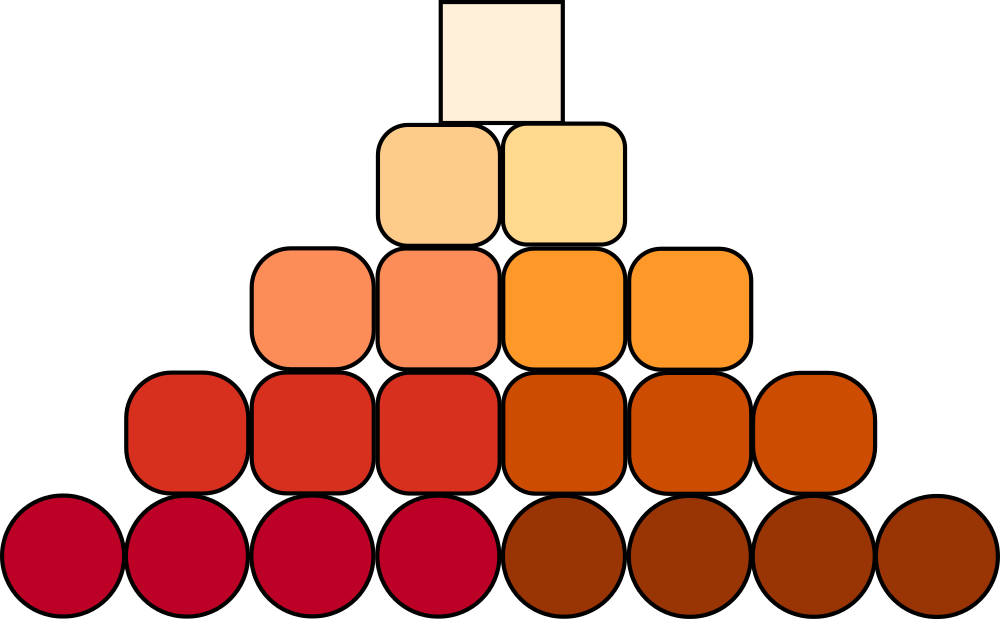
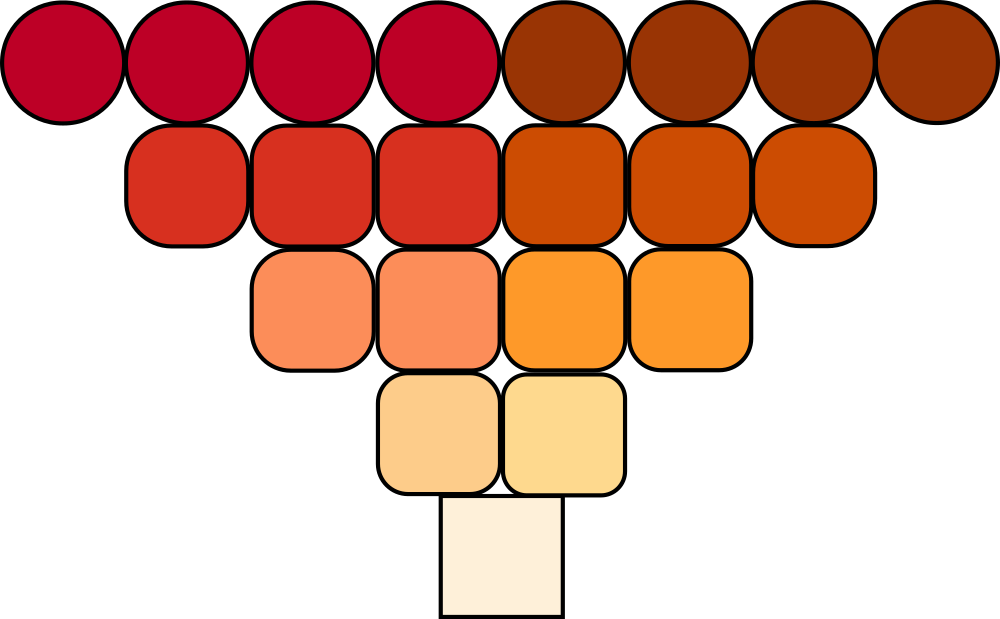
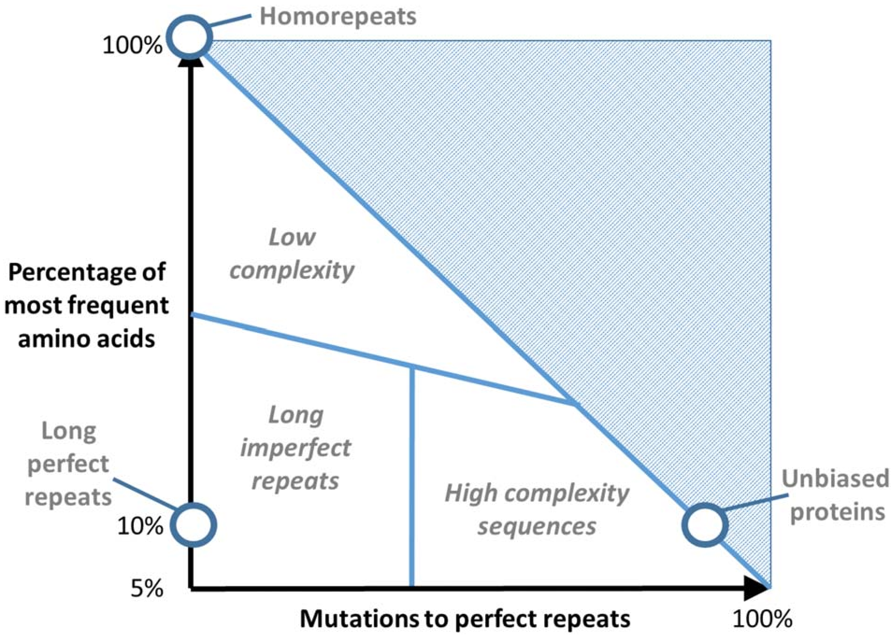
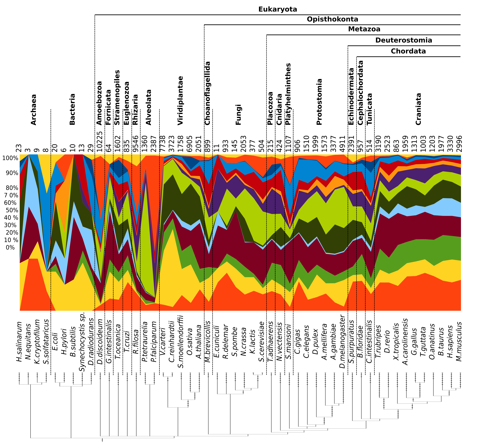
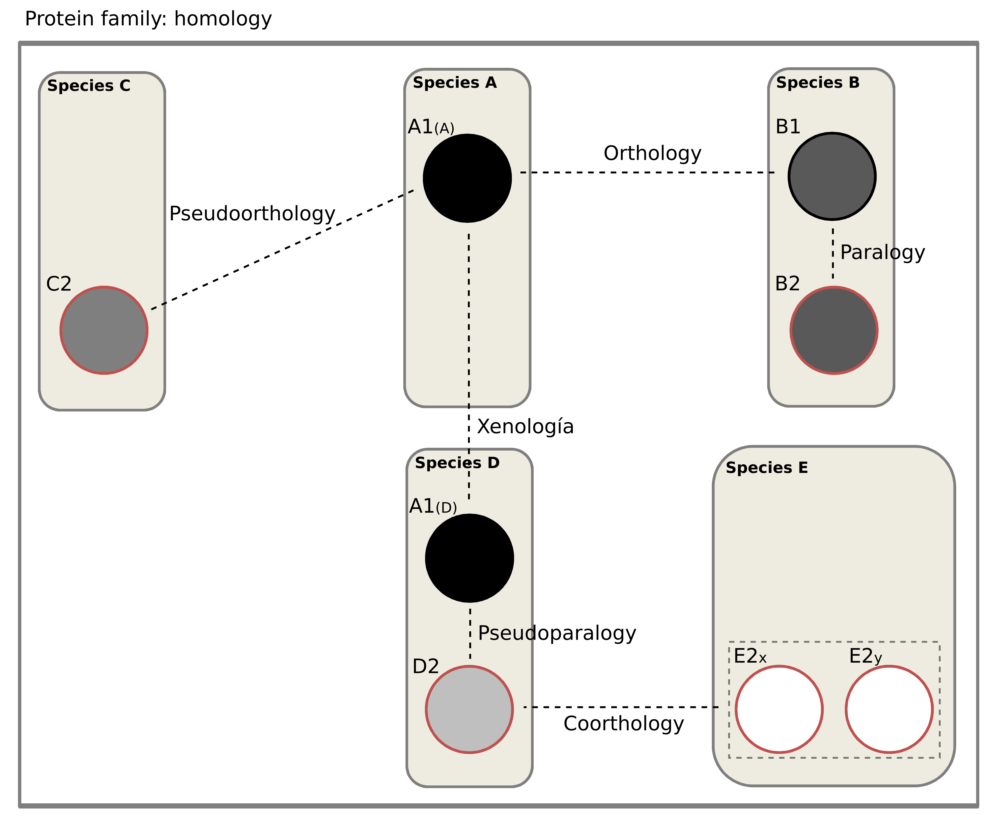

Welcome to the Low Complexity in Evolution research group
We are a group established at the Pablo de Olavide University (Seville, Spain) since late 2024, as part of the UPOBioinfo Group.
At the moment, the group is maintained with funds obtained from the Spanish government in the Beatriz Galindo Fellowship call 2023 and the Proyecto de Generación del Conocimiento 2024 call.
Send me an email if you are interested in working in the group or collaborate with us.
Internships, BSc. theses/projects and MSc. theses/projects are always welcome :)
News
- January 2026: Nerea Blanco has started the first PhD of the LCE group.
- July 2025: Our project "PolyX at the Evolutionary Scale: Definition, Functional Roles, and Homorepeat Interplay (PolyX-Evo)" has been proposed for funding in the last Proyecto de Generación del Conocimiento 2024 call.
- March 2025: Dr. Mier was appointed as Researcher at the Andalusian Centre for Developmental Biology CABD (Seville, Spain).
- December 2024: We just moved to our new office in the Andalusian Centre for Developmental Biology CABD (Seville, Spain).

Research Interests

Low Complexity Regions (LCRs)
LCRs are proteins regions where the frequency distribution of amino acids deviates from the common amino acid usage. Residues in LCRs have been estimated to represent 20% and 8% of all known sequences of eukaryotes and non-eukaryotes, respectively. In the definition of LCRs, multiple concepts related to sequence composition, periodicity and structure have been used. Regarding amino acid composition, while there is a general notion that LCRs in proteins should have an excess of one or a few types of amino acid residues, there is no consensus about which metrics are the most appropriate. Additionally, the concept of LCR is intermingled with the concept of sequence repeats. Repeats are inevitably associated with LCRs, since shorter repeats result in regions with lower amino acid diversity.
Figure and text adapted from Mier et al. (2020) Brief Bioinform 21, 458-472. PMID: 30698641.

Homorepeats
Homorepeats, polyX or amino acid repeats, are protein motifs defined as consecutive runs of a single residue. They are the simplest low complexity region and rely on a highly localized abundance of an amino acid. Any amino acid can form them, although some polyX are much more abundant than others (which also depends on the species taxonomy). They are associated with multiple functionalities, from aiding protein localization to mediating protein–protein interactions. Many homorepeats have not been functionally characterized yet, despite their high abundance in eukaryotes (15% of proteins contain at least one of them). This makes them an interesting protein motif for a post-sequencing step in terms of proteome annotation.
Text from Mier and Andrade-Navarro (2022) Genes 13, 758. PMID: 35627143.
Figure from Mier et al. (2017) Proteins 85, 709-719. PMID: 28097686.

Evolution
Orthologs and paralogs are two fundamentally different types of homologous genes that evolved, respectively, by vertical descent from a single ancestral gene and by duplication. Orthology and paralogy are key concepts of evolutionary genomics. A clear distinction between orthologs and paralogs is critical for the construction of a robust evolutionary classification of genes and reliable functional annotation of newly sequenced genomes. Genome comparisons show that orthologous relationships with genes from taxonomically distant species can be established for the majority of the genes from each sequenced genome.
Text from Koonin (2005) Annu Rev Genet 39, 309-338. PMID: 16285863.
Figure from the thesis "Desarrollo de herramientas y protocolos bioinformáticos para la búsqueda de proteínas ortólogas y su aplicación en análisis evolutivos" (Teseo: 371694).
LCE Publications
- Vagiona AC, Mier P, Andrade-Navarro MA*. Unraveling cooperative and competitive interactions within protein triplets in the human interactome. Scientific Reports (2025). In press.
- Andrade-Navarro MA*, Mier P. Xsurvey: web tool to query the set of homotepears of all reference proteomes. IEEE/ACM Trans Comput Biol Bioinform (2025). PMID:40811305.
- Mier P*, Andrade-Navarro MA, Morett E*. Apparent differences between human and chimp proteomes are reduced when considering human population: Human specific variants are enriched in disordered and compositionally biased regions. PLoS One (2025).PMID:40743127.
- González-Delgado J, Mier P, Bernadó P, Neuvial P, Cortés J*. The dependence of the amino acid backbone conformation on the translated synonymous codon is not statistically significant. Proc Natl Acad Sci U S A 122(2025), e2503264122. PMID:40512784.
- Moreno-Rodríguez A, Pérez-Pulido AJ, Mier P*. Evolutionary perspective of the CAG/CAA interplay coding for pure polyglutamine stretches in proteins. NAR Genom Bioinform 7(2025), lqaf075. PMID:40491971.
Selected Past Publications
- Schumbera E+, Mier P+, Andrade-Navarro MA*. Phase separating Rho: a widespread regulatory function of disordered regions in proteins revealed in bacteria. Signal Transduction and Targeted Therapy 8(2023), 253. PMID:37344523.
- Jarnot P, Ziemska-Legiecka J, Dobson L, Merski M, Mier P, Andrade-Navarro M.A., Hancock J.M., Dosztanyi Z, Paladin L, Necci M, Piovesan D, Tosatto S.C.E., Promponas V.J., Grynberg M., Gruca A*. PlaToLoCo: the first web meta-server for visualization and annotation of low complexity regions in proteins. Nucleic Acids Res 48(2020), W77-W84. PMID:32421769.
- Urbanek A, Popovic K, Morató A, Estaña A, Elena-Real CA, Mier P, Fournet A, Allemand F, Delbecq S, Andrade-Navarro MA, Cortés J, Sibille N, Bernadó P*. Flanking Regions Determine the Structure of the Poly-Glutamine in Huntingtin through Mechanisms Common among Glutamine-Rich Human Proteins. Structure 28(2020), 733-746. PMID:32402249.
- Mier P*, Paladin L, Tamana S, Petrosian S, Hajdu-Soltész B, Urbanek A, Gruca A, Plewczynski D, Grynberg M, Bernadó P, Gáspári Z, Ouzounis C, Promponas VJ, Kajava AV, Hancock JM, Tosatto SCE, Dosztanyi Z, Andrade-Navarro MA. Disentangling the complexity of low complexity proteins. Brief Bioinform 21(2020), 458-472. PMID:30698641.
- Tørresen OK, Star B, Mier P, Andrade-Navarro MA, Bateman A, Jarnot P, Gruca A, Grynberg M, Kajava AV, Promponas VJ, Anisimova M, Jakobsen KS, Linke D*. Tandem repeats lead to sequence assembly errors and impose multi-level challenges for genome and protein databases. Nucleic Acids Res 47(2019), 10994-11006. PMID:31584084.
- Totzeck F, Andrade-Navarro MA, Mier P*. The Protein Structure Context of PolyQ Regions. PLoS ONE 12(2017): e0170801. PMID:28125688.
Lab Members
Dr. Pablo Mier
Education: Ph.D. in Bioinformatics in Biotechnology and Biomedicine, Universidad Pablo de Olavide (Seville, Spain)
Research Interests: Low Complexity Regions, Homorepeats, Molecular Biology, Protein-Protein Interactions, ...
Email: pmiemun@upo.es, pmiemun@gmail.com, munoz@uni-mainz.de
Previous positions: Postdoctoral researcher in JGU (Mainz, Germany), in the CBDM group (2015-2024)

Nerea Blanco
Role: PhD student
Education: M.Sc. in Healthcare Biotechnology, Universidad Pablo de Olavide (Seville, Spain)
Email: nblapiz@alu.upo.es
?
Role:?
Previous group members: Alberto Pérez Royo (Master student, Dec 2024 - Jun 2025).
Where are we?
We are located at the Pablo de Olavide University (Seville, Spain).
You can find us in the building of the Andalusian Centre for Developmental Biology (CABD); see the map below:
How to get here
To get to the Pablo de Olavide University in Seville, you can follow these directions depending on your mode of transportation:
By Car
From the city center:- Take Avenida de la Palmera heading south.
- Continue onto SE-30 highway.
- Take exit 9 towards Pablo de Olavide University.
- Use the SE-30 highway and follow signs for "Universidad Pablo de Olavide".
- Take exit 9.
By Public Transport
Metro:- Metro line 1 has a stop at Pablo de Olavide University.
- From the city center, you can take the metro from any station on line 1 and get off at the "Universidad Pablo de Olavide" station.
- Several bus lines serve the university. You can check the local bus schedules for the best route from your location.
Contact
- Email: pmiemun@upo.es
- Address: Centro Andaluz de Biologia del Desarrollo, Ctra/ Utrera Km. 1, 41013 Sevilla

|
Tools & Repositories
| Developed by me: |
In which I participated: |
Publications
| Overview | ||
| Published | 59 | |
| (As first author) | 29 (+2 with same contribution as first author) | |
| (As last author) | 4 | |
| (As corresponding author) | 30 |
-
2025
- Vagiona AC, Mier P, Andrade-Navarro MA*. Unraveling cooperative and competitive interactions within protein triplets in the human interactome. Scientific Reports (2025). In press.
- Andrade-Navarro MA*, Mier P. Xsurvey: web tool to query the set of homotepears of all reference proteomes. IEEE/ACM Trans Comput Biol Bioinform (2025). PMID:40811305.
- Mier P*, Andrade-Navarro MA, Morett E*. Apparent differences between human and chimp proteomes are reduced when considering human population: Human specific variants are enriched in disordered and compositionally biased regions. PLoS One (2025).PMID:40743127.
- González-Delgado J, Mier P, Bernadó P, Neuvial P, Cortés J*. The dependence of the amino acid backbone conformation on the translated synonymous codon is not statistically significant. Proc Natl Acad Sci U S A 122(2025), e2503264122. PMID:40512784.
- Moreno-Rodríguez A, Pérez-Pulido AJ, Mier P*. Evolutionary perspective of the CAG/CAA interplay coding for pure polyglutamine stretches in proteins. NAR Genom Bioinform 7(2025), lqaf075. PMID:40491971.
- Mier P*, Andrade-Navarro MA. Predicting the involvement of polyQ- and polyA in protein-protein interactions by their amino acid context. Heliyon (2024). PMID:39323775.
- Mier P*, Andrade-Navarro MA, Morett E. Homorepeat variability within the human population. NAR Genom Bioinform 6(2024), lqae053. PMID:38774515.
- Mac Donagh J, Marchesini A, Spiga A, Fallico MJ, Arrias PN, Monzon AM, Vagiona A-C, Goncalves-Kulik M, Mier P, Andrade-Navarro MA. Structured tandem repeats in protein interactions. International Journal of Molecular Sciences 25(2024), 2994. PMID:38474241.
- Mier P*, Andrade-Navarro MA. The nucleotide landscape of polyXY regions. Comput Struct Biotechnol J 21(2023), 5408-5412. PMID:38022702.
- Elena Real CA+, Mier P+, Sibille N, Andrade-Navarro MA, Bernadó P. Structure-function relationships in protein homorepeats. Curr Opin Struct Biol 83(2023), 102726. PMID:37924569.
- Monzon AM, Arrias PN, Elofsson A, Mier P, Andrade-Navarro MA, Bevilacqua M, Clementel D, Bateman A, Hirsh L, Fornasari MS, Parisi G, Piovesan D, Kajava AV, Tosatto SCE*. A STRP-ed definition of Structured Tandem Repeats in Proteins. J Struct Biol 215(2023), 108023. PMID:37652396.
- Mier P*, Andrade-Navarro MA. Evolutionary study of protein Short Tandem Repeats in protein families. Biomolecules 13(2023), 1116. PMID:37509152.
- Schumbera E+, Mier P+, Andrade-Navarro MA*. Phase separating Rho: a widespread regulatory function of disordered regions in proteins revealed in bacteria. Signal Transduction and Targeted Therapy 8(2023), 253. PMID:37344523.
- Erdozain S, Barrionuevo E, Ripoll L, Mier P, Andrade-Navarro MA. Protein repeats evolve and emerge in giant viruses. Journal of Structural Biology 215(2023), 107962. PMID:37031868.
- Kastano K, Mier P, Dosztányi Z, Promponas VJ, Andrade-Navarro MA*. Functional tuning of intrinsically disordered regions in human proteins by composition bias. Biomolecules 12(2022), 1486. PMID:36291695.
- Mier P*, Andrade-Navarro MA. Regions with two amino acids in protein sequences: a step forward from homorepeats into the low complexity landscape. Comput Struct Biotechnol J 20(2022), 5516-5523. PMID:36249567.
- Mier P*, Elena-Real C, Cortés J, Bernadó P, Andrade-Navarro MA. The sequence context in poly-Alanine regions: Structure, function and conservation. Bioinformatics 38(2022), 4851-4858. PMID:36106994.
- Goncalves-Kulik M, Mier P, Kastano K, Cortés J, Bernadó P, Schmid F, Andrade-Navarro MA*. Low complexity induces structure in protein regions predicted as intrinsically disordered. Biomolecules 12(2022), 1098. PMID:36008992.
- Vagiona AC, Mier P, Petrakis S, Andrade-Navarro MA*. Analysis of Huntington’s disease modifiers using the hyperbolic mapping of the protein interaction network. Int J Mol Sci 10(2022), 5853. PMID:35628660.
- Mier P*, Fontaine JF, Stoldt M, Libbrecht R, Martelli C, Foitzik S, Andrade-Navarro MA. Annotation and analysis of 3902 odorant receptor protein sequences from 21 insect species provide insights into the evolution of odorant receptor gene families in solitary and social insects. Genes 13(2022), 919. PMID:35627304.
- Mier P* and Andrade-Navarro MA. PolyX2: fast detection of homorepeats in large protein datasets. Genes 13(2022), 758. PMID:35627143.
- Mier P* and Andrade-Navarro MA. Between Interactions and Aggregates: The PolyQ Balance. Genome Biology and Evolution 13(2021), evab246. PMID:34791220.
- Kamel M, Kastano, Mier P, Andrade-Navarro MA*. REP2: a web server to detect common tandem repeats in protein sequences. Journal of Molecular Biology 433(2021), 166895. PMID:33972020.
- Mier P* and Andrade-Navarro MA. The conservation of low complexity regions in bacterial proteins depends on the pathogenicity of the strain and subcellular location of the protein. Genes 12(2021), 451. PMID:33809982.
- Mier P* and Andrade-Navarro MA. Avoided Motifs: short amino acid strings missing from protein datasets. Biological Chemistry 402(2021), 945-951. PMID:33660494.
- Kastano K, Mier P, Andrade-Navarro MA*. The role of low complexity regions in protein interaction modes: an illustration in Huntingtin. International Journal of Molecular Sciences 22(2021), 1727. PMID:33572172.
- Mier P* and Andrade-Navarro MA. Assessing the low complexity of protein sequences via the low complexity triangle. PLoS ONE (2020). doi: 10.1371/journal.pone.0239154. PMID:33378336.
- Rubio A, Mier P, Andrade-Navarro MA, Garzón A, Jiménez J, Pérez-Pulido AJ*. CRISPR sequences are sometimes erroneously translated and can contaminate public databases with spurious proteins containing spaced repeats. Database (2020). doi: 10.1093/database/baaa088. PMID:33206958.
- Kastano K, Erdős G, Mier P, Alanis-Lobato G, Promponas VJ, Dosztányi Z, Andrade-Navarro MA*. Evolutionary study of disorder in protein sequences. Biomolecules 10(2020), 1413. PMID:33036302.
- Paladin L, Necci M, Piovesan D, Mier P, Andrade-Navarro MA, Tosatto SCE*. A novel approach to investigate the evolution of structured tandem repeat protein families by exon duplication. J Struct Biol 212(2020), 107608. PMID:32896658.
- Mier P* and Andrade-Navarro MA. The features of polyglutamine regions depend on their evolutionary stability. BMC Evol Biol 20(2020), 59. PMID:32448113.
- Mier P* and Andrade-Navarro MA. MAGA: A Supervised Method to Detect Motifs From Annotated Groups in Alignments. Evol Bioinform Online 16(2020). PMID:32425492.
- Jarnot P, Ziemska-Legiecka J, Dobson L, Merski M, Mier P, Andrade-Navarro M.A., Hancock J.M., Dosztanyi Z, Paladin L, Necci M, Piovesan D, Tosatto S.C.E., Promponas V.J., Grynberg M., Gruca A*. PlaToLoCo: the first web meta-server for visualization and annotation of low complexity regions in proteins. Nucleic Acids Res 48(2020), W77-W84. PMID:32421769.
- Urbanek A, Popovic K, Morató A, Estaña A, Elena-Real CA, Mier P, Fournet A, Allemand F, Delbecq S, Andrade-Navarro MA, Cortés J, Sibille N, Bernadó P*. Flanking Regions Determine the Structure of the Poly-Glutamine in Huntingtin through Mechanisms Common among Glutamine-Rich Human Proteins. Structure 28(2020), 733-746. PMID:32402249.
- Leismann J, Spagnuolo M, Pradhan M, Wacheul L, Vu MA, Musheev M, Mier P, Andrade-Navarro MA, Graille M, Niehrs C, Lafontaine DL, Roignant JY*. The 18S ribosomal RNA m6A methyltransferase Mettl5 is required for normal walking behavior in Drosophila. EMBO Rep 21(2020), e49443. PMID:32350990.
- Mier P, Elena Real C, Urbanek A, Bernadó P, Andrade-Navarro MA*. The importance of definitions in the study of polyQ regions: a tale of thresholds, impurities and sequence context. Comput Struct Biotechnol J 18(2020), 306-313. PMID:32071707.
- Mier P*, Paladin L, Tamana S, Petrosian S, Hajdu-Soltész B, Urbanek A, Gruca A, Plewczynski D, Grynberg M, Bernadó P, Gáspári Z, Ouzounis C, Promponas VJ, Kajava AV, Hancock JM, Tosatto SCE, Dosztanyi Z, Andrade-Navarro MA. Disentangling the complexity of low complexity proteins. Brief Bioinform 21(2020), 458-472. PMID:30698641.
- Tørresen OK, Star B, Mier P, Andrade-Navarro MA, Bateman A, Jarnot P, Gruca A, Grynberg M, Kajava AV, Promponas VJ, Anisimova M, Jakobsen KS, Linke D*. Tandem repeats lead to sequence assembly errors and impose multi-level challenges for genome and protein databases. Nucleic Acids Res 47(2019), 10994-11006. PMID:31584084.
- Brown P, RELISH Consortium, Zhou Y*. Large expert-curated database for benchmarking document similarity detection in biomedical literature search. Database (2019), 1-67. PMID:33326193.
- Kamel M, Mier P, Tari A, Andrade-Navarro MA*. Repeatability in protein sequences. J Struct Biol 208(2019), 86-91. PMID:31408700.
- Rubio A, Casimiro-Soriguer CS, Mier P, Andrade-Navarro MA, Garzón A, Jiménez J, Pérez-Pulido AJ*. AnABlast, re-searching for protein-coding sequences in genomic regions. Methods Mol Biol 1962(2019), 207-214. PMID:31020562. ISBN: 978-1-4939-9172-3.
- Mier P* and Andrade-Navarro MA. Traitpedia: a collaborative effort to gather species traits. Bioinformatics 35(2019), 1079-1081. PMID:30165582.
- Mier P* and Andrade-Navarro MA. Toward completion of the Earth’s proteome: an update a decade later. Brief Bioinform 20(2019), 463:470. PMID:29040399.
- Mier P*, Pérez-Pulido AJ, Andrade-Navarro MA. Automated selection of homologs to track the evolutionary history of proteins. BMC Bioinform 1(2018), 431. PMID:30453878.
- Alanis-Lobato G*, Mier P, Andrade-Navarro MA*. The latent geometry of the human protein interaction network. Bioinformatics 34(2018), 2826-2834. PMID:29635317.
- Mier P* and Andrade-Navarro MA. Glutamine codon usage and polyQ evolution in primates depend on the Q stretch length. Genome Biol Evol 10(2018), 816-825. PMID:29608721.
- Brüne D, Andrade-Navarro MA, Mier P*. Proteome-wide comparison between the amino acid composition of domains and linkers. BMC Res Notes 11(2018). PMID:29426365.
- Totzeck F, Andrade-Navarro MA, Mier P*. The Protein Structure Context of PolyQ Regions. PLoS ONE 12(2017): e0170801. PMID:28125688.
- Mier P*, Alanis-Lobato G, Andrade-Navarro MA. Context characterization of amino acid homorepeats using evolution, position, and order. Proteins: Structure, Function and Bioinformatics 85(2017), 709-719. PMID:28097686.
- Mier P*, Pérez-Pulido AJ, Reynaud EG, Andrade-Navarro MA. Reading the Evolution of Compartmentalization in the Ribosome Assembly Toolbox: The YRG Protein Family. PLoS ONE 12(2017): e0169750. PMID:28072865.
- Mier P* and Andrade-Navarro MA. dAPE: a web server to detect homorepeats and follow their evolution. Bioinformatics 33(2017), 1221-1223. PMID:28031183.
- Mier P*, Alanis-Lobato G, Andrade-Navarro MA. Protein-protein interactions can be predicted using coiled coil co-evolution patterns. Journal of Theoretical Biology 412(2017), 198-203. PMID:27832945.
- Alanis-Lobato G*, Mier P, Andrade-Navarro MA. Manifold learning and maximum likelihood estimation for hyperbolic network embedding. Applied Network Science 1(2016). PMID:30533502.
- Alanis-Lobato G*, Mier P, Andrade-Navarro MA. Efficient embedding of complex networks to hyperbolic space via their Laplacian. Scientific Reports 6(2016). PMID:27445157.
- Mier P* and Andrade-Navarro MA. CABRA: Cluster and Annotate Blast Results Algorithm. BMC Res Notes 9(2016). PMID:27129717.
- Mier P* and Andrade-Navarro MA. FastaHerder2: Four Ways to Research Protein Function and Evolution with Clustering and Clustered Databases. Journal of Computational Biology 23(2016), 270-278. PMID:26828375.
- Mier P, Andrade-Navarro MA, Pérez-Pulido AJ*. orthoFind Facilitates the Discovery of Homologous and Orthologous Proteins. PLoS ONE 10(2015): e0143906. PMID:26624019.
- Muñoz-Centeno MC, Martín-Guevara C, Flores A, Pérez-Pulido A, Antúnez-Rodríguez C, Castillo A, Sánchez-Durán M, Mier P, Bejarano E*. Mpg2 interacts and cooperates with Mpg1 to maintain yeast glycosylation. FEMS Yeast Research 12(2012), 511-520. PMID:22416758.
- Mier P, Pérez-Pulido AJ*. Fungal Smn and Spf30 homologues are mainly present in filamentous fungi and genomes with many introns: Implications for Spinal Muscular Atrophy. Gene 491(2012), 135-141. PMID:22020225.
2024
2023
2022
2021
2020
2019
2018
2017
2016
2015
2012
(Co-)/Organization of scientific events
- 4th Challenges in Computational Biology Meeting: Single Cell Data Analysis. Virtual meeting. 18 September 2020.
- REFRACT Kick-off Meeting and Tandem Repeat Proteins Symposium. Johannes Gutenberg University (Mainz, Germany). 4-8 February 2019.
- 2nd NGP-net Hackathon on Low Complexity Regions in Proteins. IMB (Mainz, Germany). 28-29 November 2016.
- Temporary exposition "Genetics and Bioinformatics: playing with the letters of a genome to understand human illnesses". Parque de las Ciencias, Granada (Spain). September-November 2011.
Editorial work
- Editorial Board Member of journal BMC Methods. ISSN 3004-8729, June 2024 – current.
- Editorial Board Member of journal BMC Bioinformatics. ISSN 1471-2105, March 2024 – June 2024.
- Guest Editor of Special Issue Bioinformatics in Protein Evolution, in journal Biomolecules. ISSN 2218-273X, June 2023.
- Reviewer Board Member of journal BioTech. ISSN 2673-6284, June 2022 – current.
- Associate editor of number 2 of journal Biosaia. ISSN 2254-3821, April 2013.
Teaching
- [2024-2025] Professor of “Biology”. Bachelor degree: Environmental Sciences. Universidad Pablo de Olavide (Seville, Spain).
- [2024-2025] Professor of “Bioinformatics”. Bachelor degree: Biotechnology. Universidad Pablo de Olavide (Seville, Spain).
- [2015-2024] Support for teaching of protein bioinformatics. Johannes Gutenberg University (Mainz, Germany).
- [2019-2024] Professor of subject “Linux operating system and high-performance computing”. Postgraduate course “Diploma of Specialization in Bioinformatics Analysis”. Universidad Pablo de Olavide (Seville, Spain).
- [2015-2017, 2019-2024] Professor of subject “Handling molecular sequences”. Postgraduate course “Diploma of Specialization in Bioinformatics Analysis”. Universidad Pablo de Olavide (Seville, Spain).
- [2015-2017] Professor of subject “Gene functional annotation and biological enrichment”. Postgraduate course “Diploma of Specialization in Bioinformatics Analysis”. Universidad Pablo de Olavide (Seville, Spain).
- [2011-2013] Professor of “Bioinformatics”. Bachelor degree: Biotechnology. Universidad Pablo de Olavide (Seville, Spain).
Education
- [2020] Entry-Level Python Programmer, certified by the Python Institute. Exam Version: PCEP-30-01 [NP]. Digital certification.
- [2013-2014] PhD in “Bioinformatics in Biotechnology and Biomedicine”. Dissertation title: “Development of biocomputing protocols and tools for the search of orthologous proteins and its application in evolutionary analyses”.
- [2011-2013] M.Sc. degree in “Health Biotechnology”. Universidad Pablo de Olavide (Seville, Spain). Grades: 9.3/10.
- [2006-2011] B.Sc. degree in "Biotechnology". Universidad Pablo de Olavide (Seville, Spain). Grades: 8.23/10.
Languages
(advanced), (medium), (basic), (basic)
(medium), (basic), (basic)